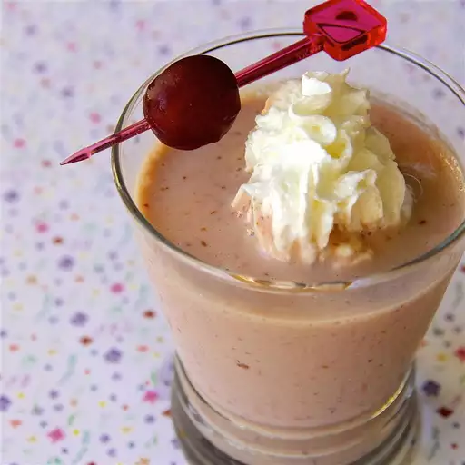

Banana Cherry Smoothie

A favorite combination of mine I invented in high school, something
different from the same old strawberry and banana. Substitute vanilla
extract for the honey for a different taste.
Ingredients
- 1 banana, cut into chunks
- ½ cup Greek yogurt
- ½ cup milk
- ⅓ cup frozen pitted cherries
- 1 teaspoon honey, or to taste
Steps
-
Blend banana, yogurt, milk, cherries, and honey together in a blender
until smooth.